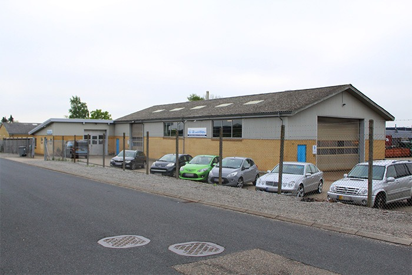
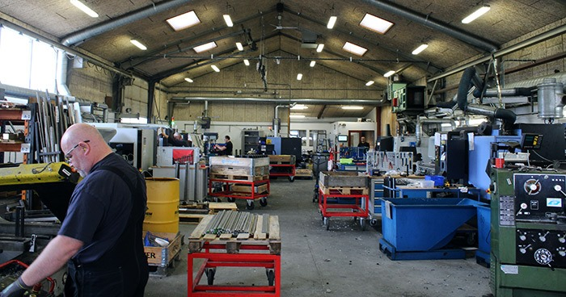

BT's Historie
BT’s maskinfabrik etableret i 1997, er i dag er vi en moderne maskinfabrik der beskæftiger dygtige og ansvarsbevidste medarbejdere, alle med stor erfaring i de funktioner de varetager. Vi gør alt hvad vi kan for at leve op til de krav og forventninger, som kunderne har til det stykke arbejde, de betror os.
Vi har igennem årene produceret emner for alle slags virksomheder, store som små og er stolte af vores arbejde som har givet os mulighed løse selv de mest komplekse maskine herunder tandlægeudstyr og løsninger til ørsted satellitten.
Vi lægger stor vægt på fleksibilitet vedr. levering, og deltager meget gerne i udviklingsprocesser med vores store erfaring. Vores medarbejdere og maskinpark gør det muligt at varetage løsning af specialopgaver som i nogle tilfælde foregår på kundernes adresser. Vores services indbefatter også afhentning og levering i forbindelse med opgaver.